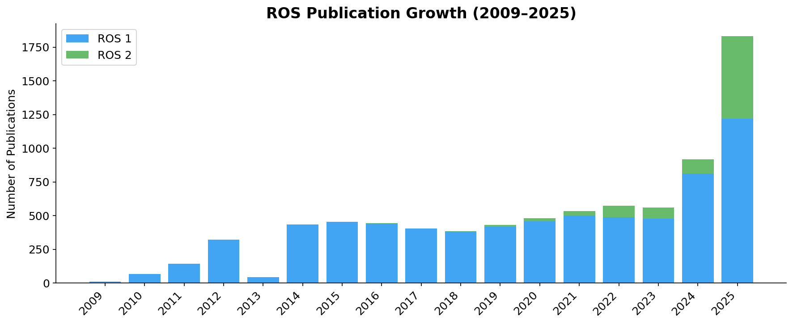
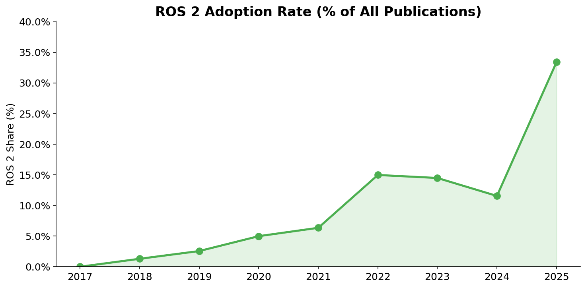
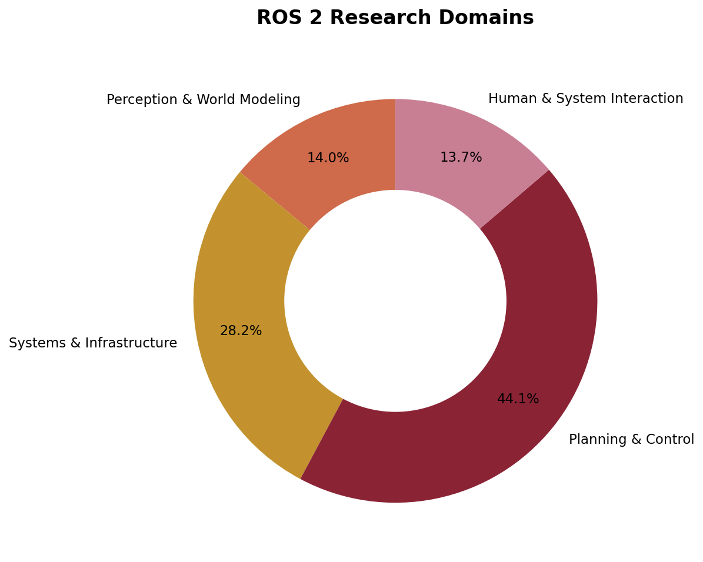
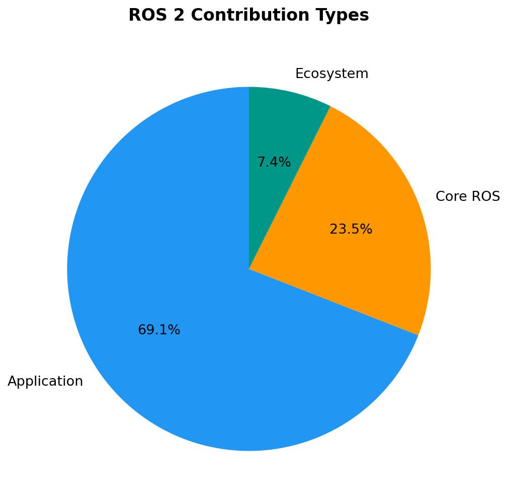
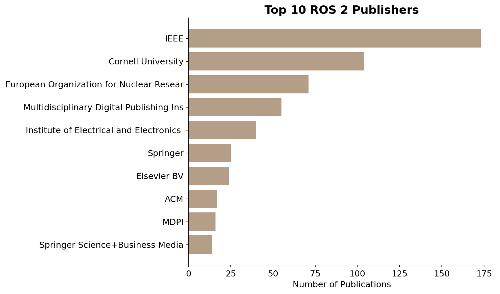
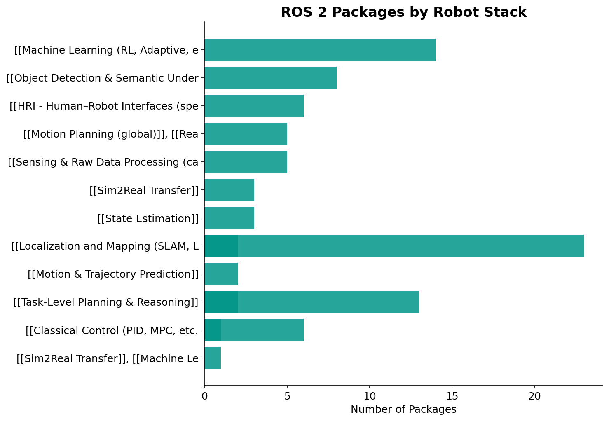
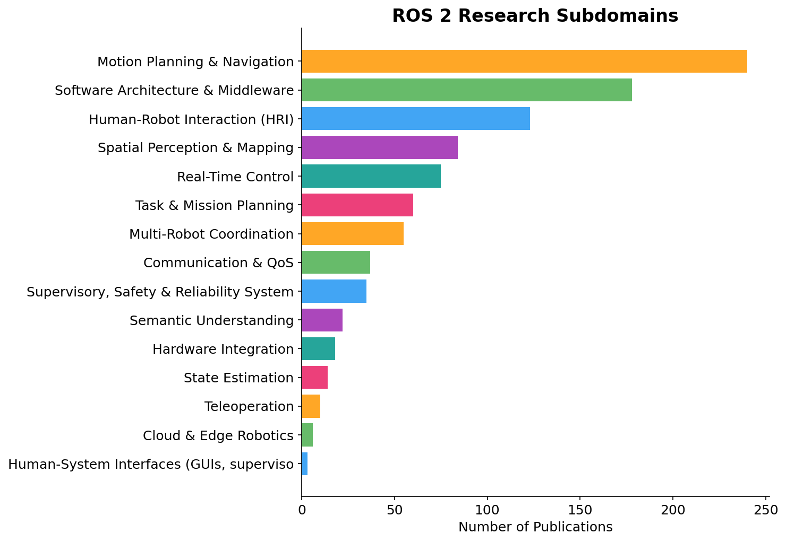

The Robot Operating System (ROS) has been the de facto standard framework for developing robotics applications since 2009. Its successor, ROS 2, addresses critical limitations in reliability, real-time performance, security, and multi-robot scalability through a fundamentally redesigned architecture built on the Data Distribution Service (DDS) middleware.
This survey provides a comprehensive, multidimensional review of ROS 2 research, guided by three research questions:
We analyze over 8,200 publications spanning 2009–2025, organizing advances into four pillars: (1) middleware architectures, (2) real-time scheduling and hardware acceleration, (3) security, privacy, and safety, and (4) multi-robot and distributed coordination. The survey is accompanied by a curated, publicly accessible database of ROS-related resources.
DDS-based communication, RMW abstraction layers, QoS policies, Zenoh as a post-DDS alternative, and the "readiness paradox" of operational complexity vs. architectural sophistication.
Executor models, PREEMPT_RT integration, response-time analysis, micro-ROS for MCUs, FPGA/GPU acceleration, and cross-layer scheduling frameworks.
SROS2 overhead benchmarks, DDS Security, intrusion detection, privacy-aware data flow, mixed-criticality scheduling, and formal verification.
Fleet management (Open-RMF), DDS discovery in large networks, edge/cloud offloading, heterogeneous coordination, and scalability challenges.
Quantitative analysis from our curated database of 8,033 ROS publications.

Publication growth: ROS 1 vs ROS 2 (2009–2025). ROS 2 research has grown steadily since 2017.

ROS 2's share of all ROS publications over time.

Distribution of ROS 2 research across application domains.

ROS 2 article type distribution: Applications, Core, and Ecosystem.

Top publishers of ROS 2 research.

ROS 2 community packages categorized by robot stack and infrastructure type.

ROS 2 research subdomain distribution across the taxonomy.
@article{albatati2025ros2survey,
author = {Al-Batati, Abdulrahman and Koubaa, Anis and Abdelkader, Mohamed and Gabr, Khaled and Aloqaily, Hamad},
title = {ROS 2 in a Nutshell: A Survey},
journal = {Pending},
year = {2026},
}